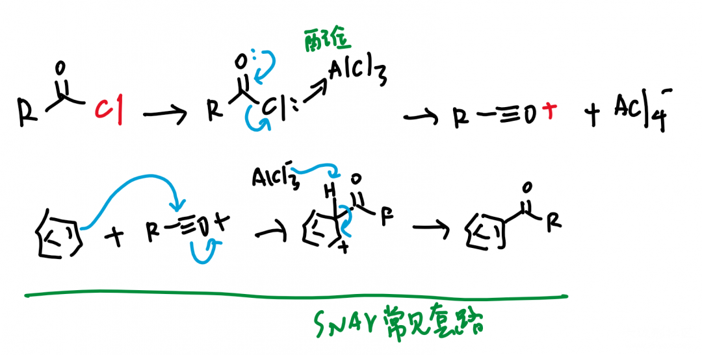
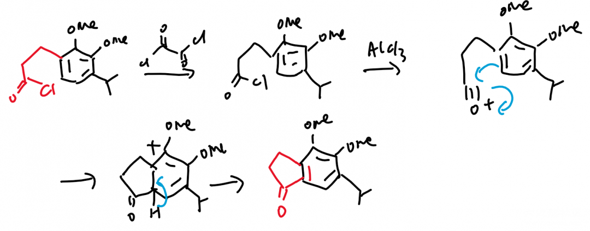

酰基化反应上：傅克反应（Friedel-Crafts）
傅克反应是很经典的有机反应，同时包含烷基化反应和酰基化反应，核心是用氯代醛或氯代烷，与苯环反应，在苯环上加成相应的酰基或烷基。这个反应的发现是一个偶然，《有机人名反应》上记载了它的发现经过。
In 1877, both Friedel and Crafts were working in Charles A, Wurtz's laboratory. In order to prepare amyl iodide, they treated amyl chloride with aluminum and iodide using benzene as the solvent. Instead of amyl iodide, they ended up with amylbenzene! （它们想用氯代戊烷和碘反应制备碘代戊烷，用苯做了溶剂，意外地获得了戊基苯，于是直接成为当今有机合成最有用的反应之一）
核心原理
傅克反应需要用三氯化铝做催化剂，三氯化铝是典型路易斯酸，结合一个氯离子后形成稳定的四氯化铝配离子，很稳定。因此可以将氯代醛或氯代烷转化为酰基或烷基C+阳离子（核心中间体），然后再亲电加成到苯环上。
机理


注：
有些人认为，如果R+为CH3+的话，会和AlCl4-若即若离，仍然处于配位状态，但不影响反应。
在苯环上添加卤素或者烷氧基，也可以取到邻对位定位的作用。
分子内的反应
《有机人名反应》P234 上有一个分子内发生傅克酰基化反应，于是成环的例子。
下集讲什么
思考一下，如果想通过傅克反应加成甲酰基，这几乎是不现实的事情，因为“甲酰氯”或者“甲酰阳离子”是不存在的。因此对于这一缺陷，有一个Gatermann-Koch反应用一氧化碳和氯化氢缝合做成类似甲酰氯的中间体；还有一个Vilsmeier-Haack反应，并没有采用傅克反应C+离子的套路，而用氯仿的加成，然后再水解掉氯离子达到了甲酰化的效果。
投稿地址：http://www.lawaxi.net/d/99
投稿日期：2020-07-02
收录日期：2020-08-02
引用本文：[1]Delay;Creator Chemical Lett.,2020,006.